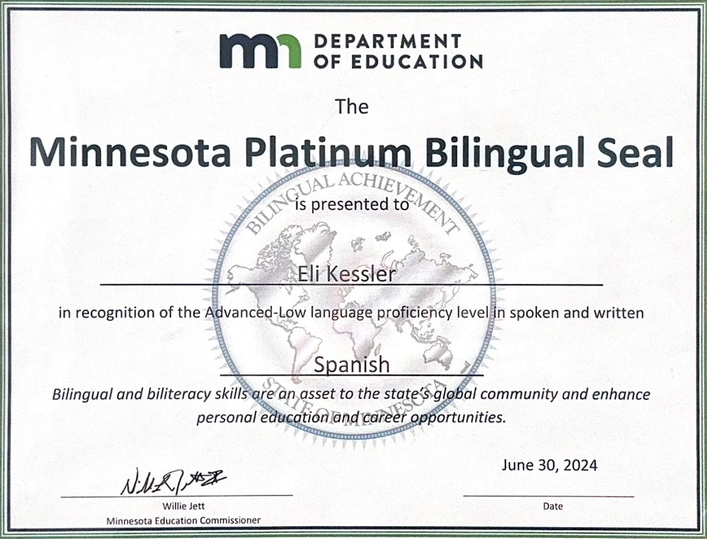

My name is Eli
I am Studying Business Management and Spanish at the university of Minnesota Duluth.
As part of my Business Management studies, I am currently focusing on leadership development, Spanish communication, and Management Information Systems (MIS). My coursework in MIS provided the technical foundation that allowed me to code and build this website from scratch. In addition to my current studies, I have over a decade of formal Spanish education, culminating in the attainment of the Platinum Seal of Biliteracy from the Minnesota Department of Education in 2024.
Outside of my academic and professional commitnments, I love to spend time with friends and family, my pets, and get outside as much as possible! I especially love a good bike ride! Since moving to Duluth, I have been exploring the bike paths all around town and love riding along the coast of Lake Superior. When time allows, traveling is one of my favorite ways to discover diverse cuisines, explore new places, and spend more time with the people I love the most. I have traveled many ocuntries all over, and hope to travel the rest of the world some day!

Global Communication
Platinum Bilingual Seal
Attained in 2024, this distinction from the Minnesota Department of Education recognizes a high functional level of proficiency in both English and Spanish...
Personal Values
Community Wellbeing
The wellbeing of employees and the communities they serve is a top priority for me...
Integrity
I believe that companies should always operate with transparency and honesty...
Sustainability
Our planet is one of a kind, and we are in danger of ruining the environment...